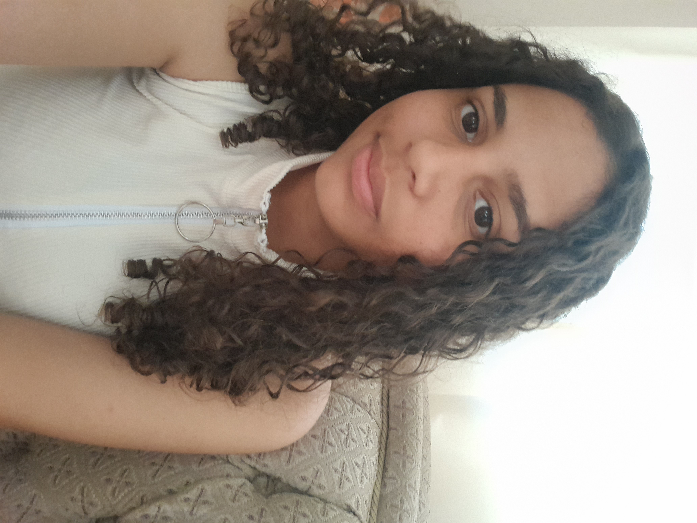
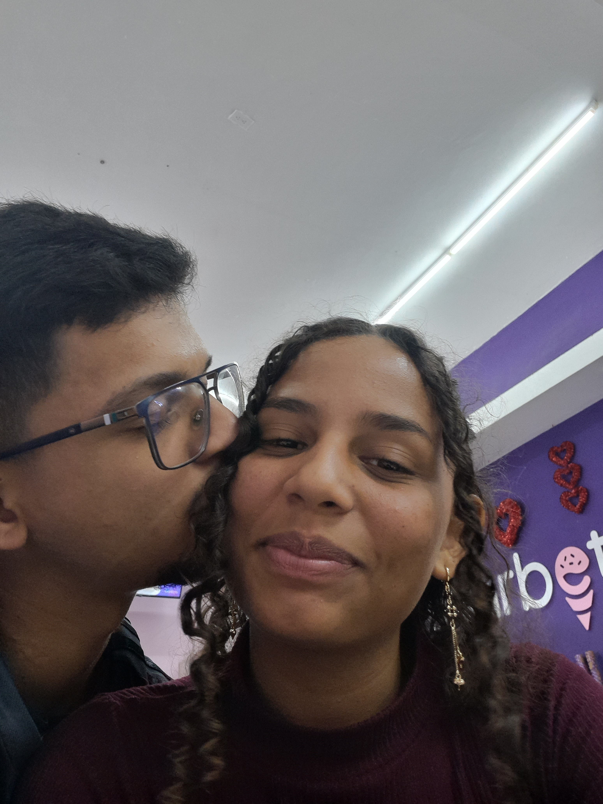
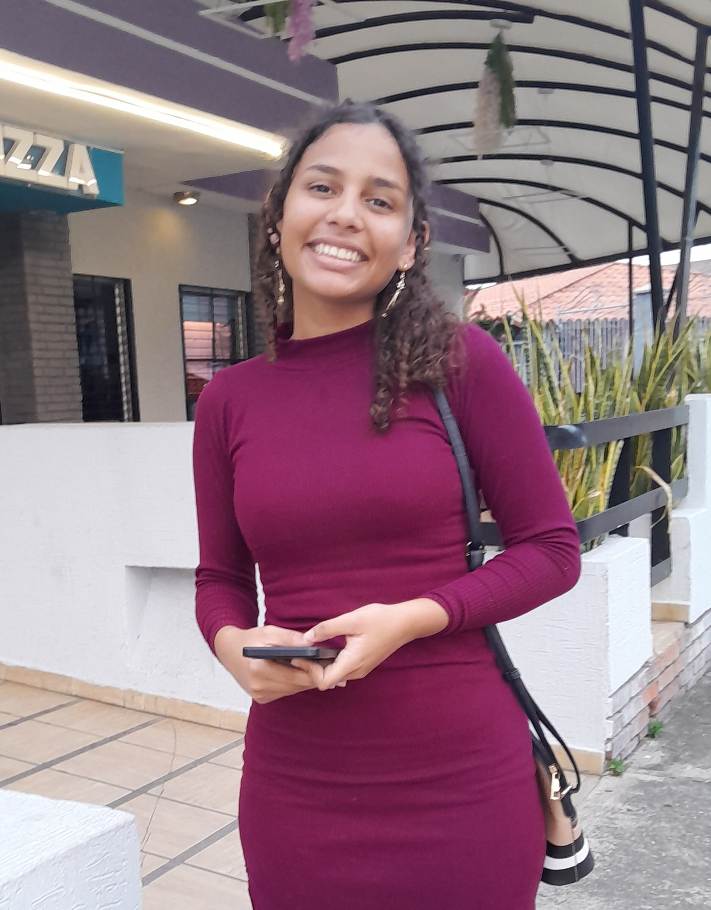
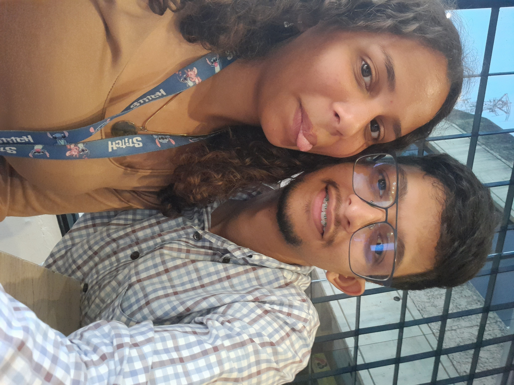
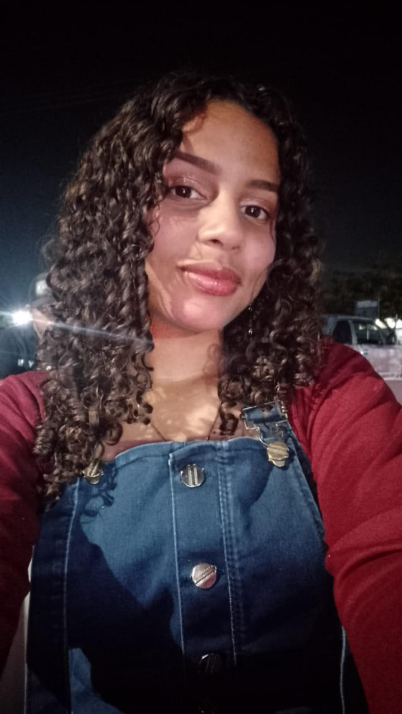
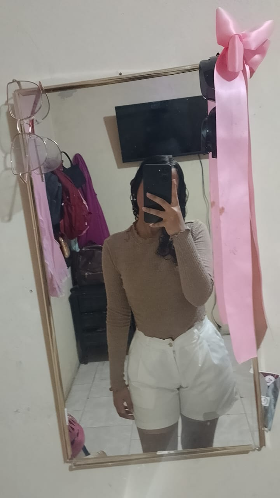

Porque cada latido me recuerda lo afortunado que soy de tenerte. Esta página es solo una pequeña muestra de todo lo que siento por ti.






Cada foto es un tesoro que guardo con mi alma
"Si el destino es un libro, gracias por ser el capítulo que nunca quiero terminar de leer."
"Tu amor es vino tinto que embriaga mis sentidos, morado de pasión, lila de sueños compartidos."
"Si el mundo se acaba, yo elijo quedarme a tu lado. Porque en tus brazos descubrí el universo ideal."
"Te quiero en cada latido, en cada suspiro, en cada amanecer. Eres la magia que ilumina mi ser."
🌷 Cada flor que florece es un recuerdo de lo mucho que te admiro. 🌷